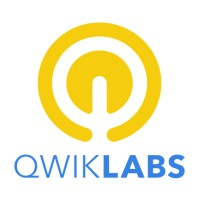
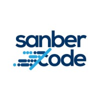

Fullstack development
Applications that work together
I’m Annas, a fullstack engineer. I connect what people see with the services and infrastructure that make it work.
Interface → Services → DataReact · Kotlin · Node.js · PostgreSQL
Illustrative orbits · Satellites enlarged · Distances compressed, time accelerated
Earth textures: Solar System Scope / CC BY 4.0
Software engineer · Jakarta, Indonesia
Software, systems,
and a curiosity for space.
I’m a fullstack engineer at Samsung R&D Indonesia. My work spans applications, data pipelines, and AI tools. I’m also exploring software for space and ground systems.
About me
From the interface to the infrastructure.
Fullstack development
I’m Annas, a fullstack engineer. I connect what people see with the services and infrastructure that make it work.
Data engineering
My work at tiket.com connected distributed scraping, reverse engineering, and cloud pipelines to the decisions behind pricing.
AI and learning
I work with AI to explore ideas and develop software. I also built Cognito, a learning companion that helps people turn curiosity into understanding.
Experience
Five years across product engineering, data systems, and independent work.
Software Engineer · Jakarta · Feb 2026 — Present
Building a shared foundation for multiple Samsung apps. Bringing native behavior and end-to-end encryption across platforms, with consistent feature parity.
Feb 2022 — Feb 2026
Intern → Software Engineer I
Built distributed scraping and cloud pipelines behind pricing algorithms. Custom extraction reduced reliance on third-party data, while an ad-hoc service made exploration faster.
Aug 2022 — Apr 2024
Founder & Lead Engineer
Founded a software studio in Yogyakarta and shipped task-management, inventory, and POS products. Every mentee secured an internship or full-time role.
Apr 2021 — Feb 2023
Fullstack Engineer · Oil & Gas
Built asset tracking for 1,000+ physical assets and an enterprise risk-management system. Awarded first place among approximately 100 competitors.
Oct 2021 — Dec 2021
Frontend Engineer
Designed website routing architecture and built the interface with the Vue 3 Composition API and Express.js in a three-month engagement.
Full-time roles, independent work, and studio experience. Some engagements ran in parallel.
Selected work
Applications, data platforms, and experiments.
A selection of professional and personal work.
Web scraping & data engineering · tiket.com
A distributed data platform built on resilient web scraping. Collecting hotel and flight data, then turning it into pricing intelligence.
Scraping · Reverse engineering · Node.js · BigQuery
EXTRACT. PROCESS. PUT DATA TO WORK.
Cognito · My AI learning companion
An AI learning companion with personal learning paths, tutoring, quizzes, and progress tracking.
Personal learning paths · AI tutoring · Quizzes · Progress
Explore Cognito cognito.web.idComputer vision · Personal project
Live people tracking. From a CCTV stream to a dashboard that makes every movement count.
YOLO v11 · BoT-SORT · FastAPI · Next.js

Android · ChaChing
An Android app that helps you pause before a purchase. Budget checks run entirely on your device.
Kotlin · Jetpack Compose · Room
View on GitHubIs this purchase part
of your plan?
AI & team intelligence
WhatsApp activity transformed into searchable team knowledge with LLM summaries, Obsidian memory, and RAG Q&A.
n8n · WAHA · SvelteKit · SupabaseAsk about NotulaDeveloper tooling
LLMs, MCP, and spec-driven development connected into a workflow from requirements to architecture, code, and documentation.
TypeScript · MCP · OpenAIDiscuss the platformRealtime multiplayer
A tactical auto-battler with one deterministic engine for local PvE, authoritative online PvP, and replays.
Next.js · Colyseus · CapacitorAsk about ArtleLegacy modernization
A VB6 accounting system reimagined for the web. 52,700+ transactions across 10 branches, balancing to 0.00.
React · Spring Boot · PostgreSQLDiscuss the projectCreative automation
A pipeline for consistent pixel-art characters, equipment, poses, animations, and sprite sheets.
ComfyUI · Stable Diffusion · LoRA · ControlNetExplore the processField operations
GPS and live-camera attendance with server-side geofencing and an offline queue for PT Sari Boga Flour Mill.
Next.js · Express · PostgreSQLView on GitHubApp instrumentation
Eight KVM-accelerated Android emulators orchestrated with Docker Compose and a Node.js Frida service.
Frida · Docker · Node.jsView on GitHubAutonomous systems
A desktop ground-control station with satellite mapping, waypoint placement, and real-time Arduino telemetry.
VB.NET · WPF · ArduinoView on GitHubComputer vision
Automated detection and classification of potholes in road imagery using a YOLOv8 computer vision model.
YOLOv8 · OpenCV · TensorFlowDiscuss the model
Skills
Tools and technologies from my day-to-day work.
I’m Annas, a fullstack engineer based in Indonesia. I build the interface, the services, and the data pipelines that connect them. Data guides my decisions; AI is a collaborator in how I explore, develop, and learn.
Interfaces and shared foundations that feel at home on every device.
TypeScript · React / Next.js · Vue.js · Kotlin · Jetpack Compose · Capacitor
Resilient scraping, services, and data pipelines that turn information into something useful.
Web scraping · Reverse engineering · Node.js · PostgreSQL · BigQuery · GCP · Docker
Working with AI as a development collaborator, and building products that help people learn and create.
MCP · LLMs · Spec-driven development · Python · n8n · Computer vision
Education
2019 — 2024 · Bachelor’s degree
Universitas Pembangunan Nasional
UPN Veteran Yogyakarta
Five years of study.
A foundation I keep building on.
Science Stream · 2016–2019
Exploring the place of progressive web apps.
18 certifications. Three areas I keep coming back to.
From web foundations to Android and backend applications.
LinkedIn · SanberCode · Progate
6The infrastructure that turns an application into a reliable service.
Google Cloud training on Qwiklabs
2Building the programming foundations to explore and work with data.
SanberCode · DicodingOutside my current work
An interest I’m beginning to explore.
Distributed systems · Cloud infrastructure · Application engineering
Orbital fundamentals · Satellite telemetry · Satellite operations · Flight software fundamentals
Areas I’m exploring, not established professional expertise.
Open to projects and conversations
Contact
Have something in mind?
You can reach me by email, or find more of my work on GitHub and LinkedIn.
Send a message